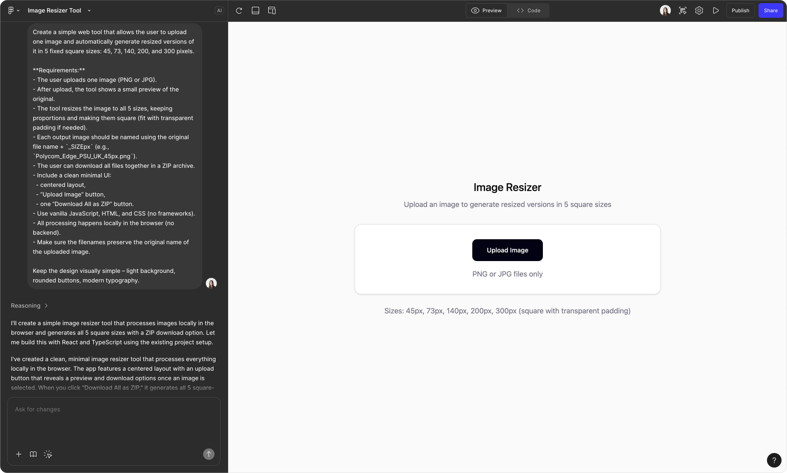

Manual image preparation was slowing us down
In our system, we use device images in multiple places and in several predefined sizes.
Every time a new device was added, the same image had to be manually prepared in many different resolutions and named according to strict conventions.
This process was:
- repetitive,
- time-consuming,
- and required designer involvement every single time.
It felt like a perfect candidate for automation.
Looking for a smarter way
I started exploring how this process could be automated. My first ideas were too heavy: scripts, local setup, extra tooling. I wanted something simpler, faster, and accessible to non-designers.
That's when I realized I could build a small internal tool myself using Figma Make.
Starting with the simplest possible MVP
It quickly became clear that generating a good UI with Figma Make wasn't trivial.
When I tried to describe a “complete” interface right away, the result was overly complex and confusing.
So I deliberately started with the simplest possible MVP – the minimum UI that could solve the core task.
From there, I:
- added features one by one,
- checked that each new step kept the UI understandable,
- avoided complexity until it was truly necessary.
This incremental approach made the tool usable instead of overwhelming.
Polishing the UI: where manual design still mattered
The final step was visual polish.
While Figma Make helped with structure and logic, refining the UI turned out to be much harder to describe in natural language. At some point, it was simply faster and clearer for me to open Figma and adjust the design manually.
Describing “good design” precisely enough for AI is still challenging – drawing it myself was quicker and more reliable.
The final tool
The result is a lightweight self-serve tool that:
- accepts one or multiple images via drag-and-drop,
- automatically generates all required sizes,
- applies consistent naming,
- exports everything in a clean, predictable structure.
Result: significant time saved for the whole team
- Project managers can now prepare device images on their own.
- Designers are no longer blocked by repetitive operational tasks.
- The process became faster, simpler, and more scalable.
What used to be a manual, error-prone task is now a small self-service tool that just works.